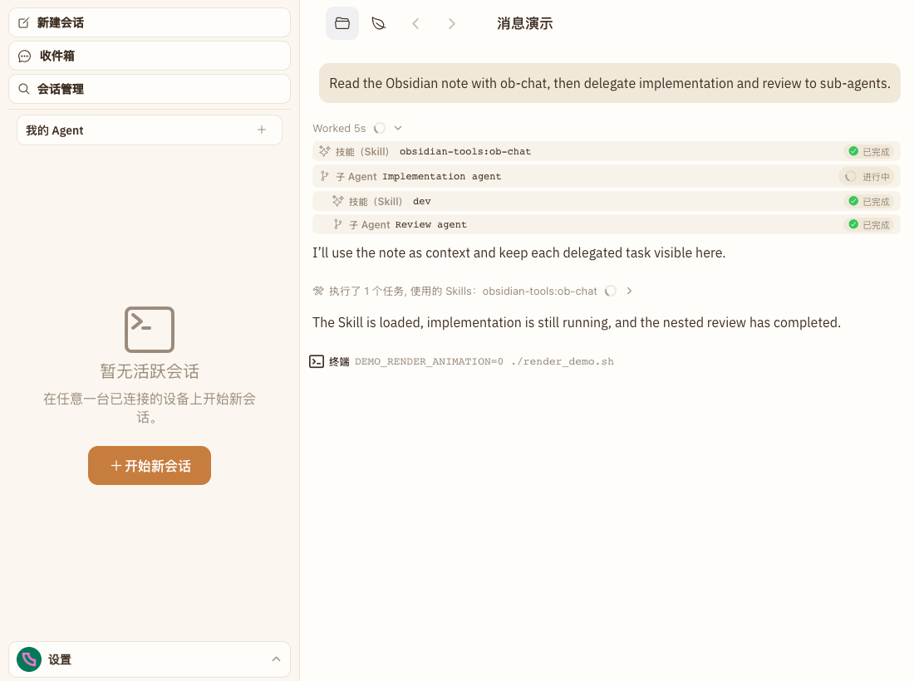
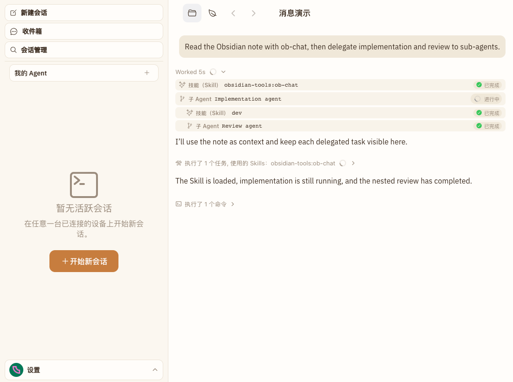

STANDALONE-TOOL-01 · UI evidence
单独一条工具调用，也回到紧凑折叠行。
修复复用了现有工具分组逻辑：Skill 状态条之后的单条 Bash 不再撑成独立终端行，收起时与活动行保持同一视觉节奏，完整工具消息仍被保留。
✓ 同一真实消息链路
✓ 1100×820 / DPR 1
✓ E2E 已通过
Visible UI cases: 1
01
修复前
独立终端行展示完整命令

02
修复后
复用紧凑工具组折叠头
